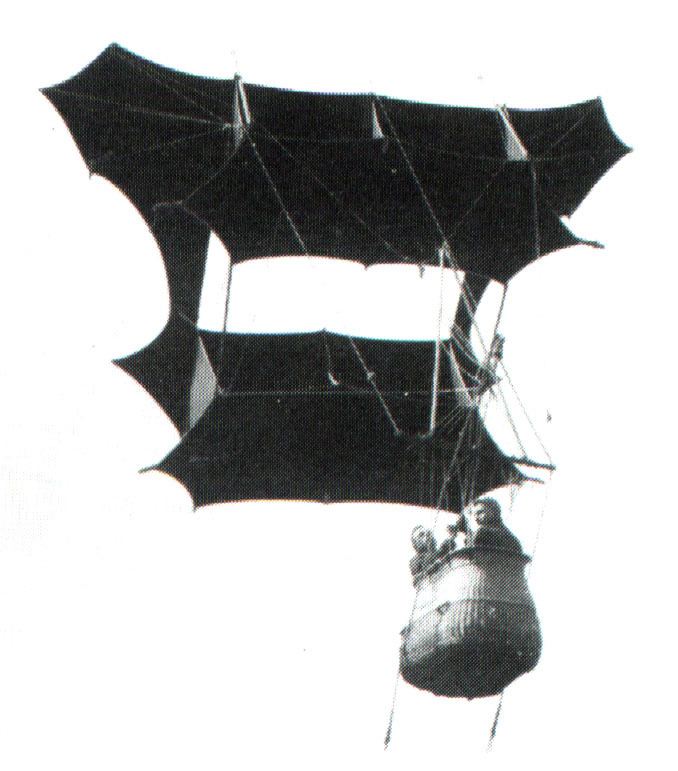
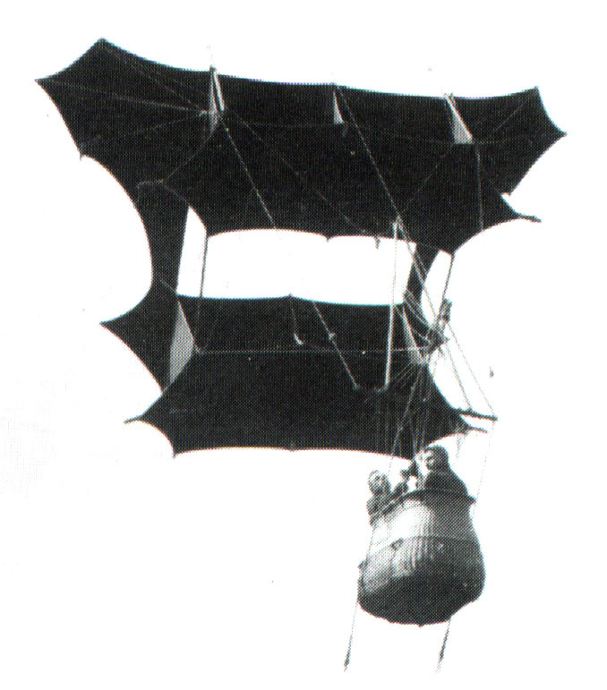
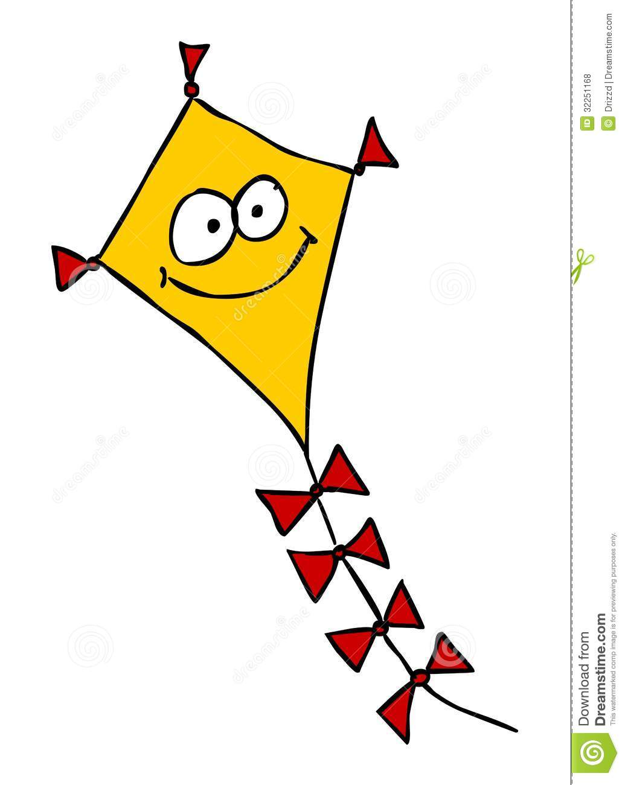
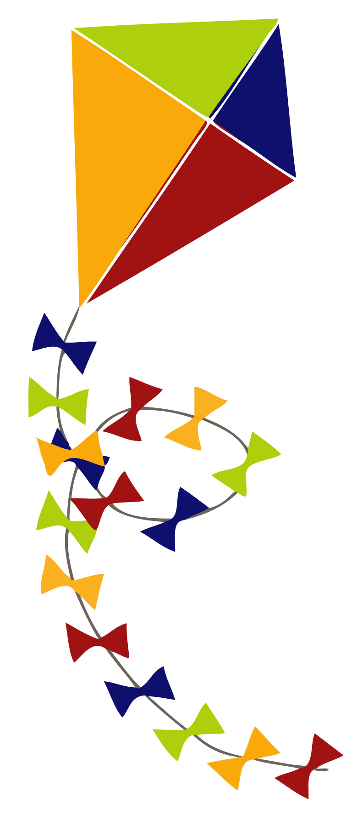

Фестиваль воздушных змеев
«Майское небо Победы»

Первые упоминания о воздушных змеях встречаются ещe во II веке до н.э., в Китае. Китайцы использовали воздушные змеи для того, чтобы измерить расстояние между своей армией и стенами замка противника. В небо поднимали разведчиков - наблюдателей. Воздушные змеи были сделаны из бамбука, бумаги и шелка. У разных народов мира есть интересные легенды о применении змеев. Со второй половины XVIII в. воздушные змеи начинают широко использовать при проведении научных исследований атмосферы. Благодаря змею был создан громоотвод. В XIX веке змеи также широко применялись для метеорологических наблюдений. В начале XX столетия воздушные змеи внесли свою лепту в создание радио, разработку первых самолeтов. Практические возможности воздушного змея привлекали внимание военных. В 1848 г. К.И. Константинов разработал систему спасения судов, терпящих бедствие вблизи берега, с помощью воздушных змеев. Во время первой мировой войны войска различных стран применяли змеи для подъёма на высоту наблюдателей-корректировщиков артиллерийского огня, разведки вражеских позиций.

Существует очень большое разнообразие форм воздушных змеев. Древние змеи изготовлялись при помощи деревянных рамок и натянутых на них листов шелка или бумаги. Почти все современные воздушные змеи делаются из углепластиковых пластмасс и синтетических тканей. По форме и устройству аэродинамических поверхностей различают:
• Oдноплоскостные - простейшие конструкции. Обладают невысокой подъёмной силой и малой ветровой устойчивостью. Таким змеям обязательно нужен хвост - шнур с привешенным к нему грузиком.
• Многоплоскостные — этажерочные, коробчатые и многоячеечные из отдельных ячеек в форме тетраэдров или параллелепипедов. Коробчатые змеи изобретены Л. Харгравом. Важной их особенностью является высокая устойчивость.
• Бескаркасные воздушные змеи. К бескаркасным относятся змеи, не имеющие жестких частей. Форму змей принимает, раздуваясь за счет набегающего потока воздуха. Отсюда два достоинства этих змеев - вероятность поломки при падении равна нулю и компактность при транспортировке. Второе преимущество позволяет изготавливать змеев очень больших размеров.
• Составные или групповые, состоящие из группы воздушных змеев (т. н. змейковый поезд), соединённых в одну гибкую систему. Змейковые поезда применялись в военном деле, так как при повреждении одного из звеньев происходило лишь уменьшение подъёмной силы и уменьшение высоты подъёма, что позволяло безопасно посадить наблюдателя или продолжать разведку.
 
 В настоящее время воздушные змеи живут полноценной, активной жизнью. Изготовление и полеты воздушного змея – одно из любимых занятий сотен тысяч детей и взрослых, которые устраивают массовые демонстрации и соревнования полетов воздушных змеев в разных уголках мира. У воздушного змея есть свой праздник. Ежегодно во второе воскресение октября во всем мире празднуется Всемирный день воздушных змеев.
 

Воздушные змеи не утратили своей притягательной силы и в наши дни. Есть несколько масштабных международных фестивалей. На них собираются профессионалы и любители, производители бумажных змеев и эксперты практически со всех уголков мира. Дизайн, расцветка, размеры изделий буквально поражают воображение своим разнообразием. А среди участников можно встретить как молодежь, так и убеленных сединой пожилых людей. Первые соревнования по запуску воздушных змеев в городе Бресте были организованы в 1987 году. Проводились они ежегодно. С 2005 года - фестиваль воздушных змеев. Принимают участие команды почти всех школ города. Посвящаются Дню Победы в Великой Отечественной войне. В этом году будет проходить юбилейный, 30-й фестиваль!

«В фестивале принимают участие 25 школьных команд, в которых выступают более 50 учащихся, занимающихся в кружках технического творчества. Они запускают сделанных ими плоских и коробчатых воздушных змеев. Жюри оценивает конструкцию, качество исполнения, высоту и стабильность их полета, а также оригинальность изготовления (оформление, использование спецэффектов и др.)». «Планируется, что вне конкурсной программы будет запущено еще не менее 50 змеев, в том числе промышленного производства. Всего на фестивале намечено запустить свыше 100 воздушных змеев». "На этот фестиваль традиционно приходит много зрителей, — отметил Н.С. Березовский, один из организаторов фестиваля, — Моделисты могут получить здесь консультации специалистов, обменяться опытом управления и конструирования воздушных змеев, поэтому это мероприятие можно назвать и мастер-классом. Число желающих заниматься змеестроением в кружках технического творчества после фестиваля резко возрастает".
8 мая 2015 года
10.00-11.00 – подготовка к открытию Фестиваля, тренировочные полёты; регистрация команд;
11.00 – открытие Фестиваля;
11.10 – осмотр и оценка жюри представленных моделей воздушных змеев;
12.00 – полёты плоских воздушных змеев;
12.30 – полёты коробчатых воздушных змеев;
13.00 – спецэффекты, полёты оригинальных воздушных змеев;
13.30 – показательные полёты лучших воздушных змеев, радиоуправляемых авиамоделей, демонстрация специальной техники учреждения «Брестское областное управление Министерства по чрезвычайным ситуациям Республики Беларусь», демонстрационные запуски ракет.
13.30 – работа жюри;
14.00 – награждение участников Фестиваля. Закрытие Фестиваля.
В этом году планируется новая номинация "Семейный экипаж". Змея запускает ребёнок с папой (мамой, дедушкой, бабушкой).

• Брестское областное управление Министерства по чрезвычайным ситуациям Республики Беларусь;
• Магазин радиоуправляемых моделей.